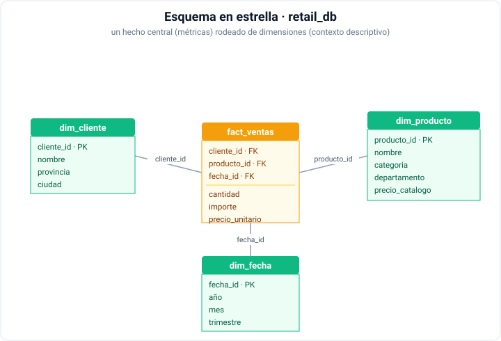
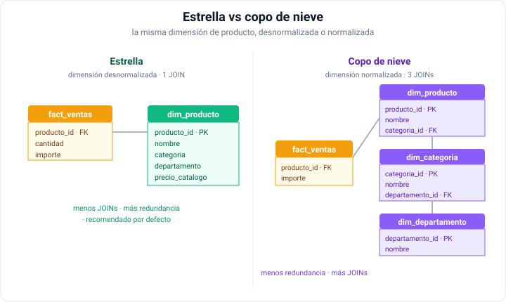
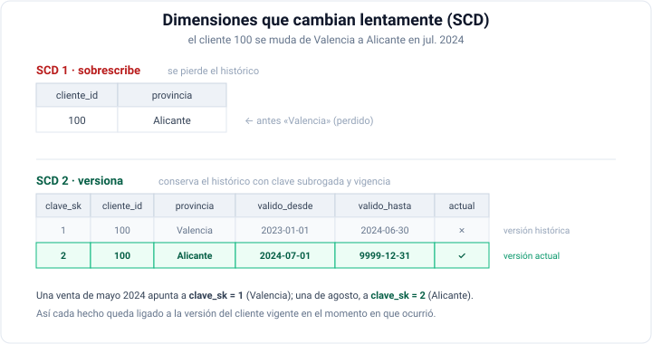

Modelado dimensional
Changelog:
- Nueva creación — Julio 2026
Ya sabemos consultar datos con DuckDB. Ahora aprenderemos a organizarlos para que esas consultas sean sencillas, rápidas y comprensibles para el negocio.
En la sesión anterior resolvimos preguntas sobre las tablas de retail_db tal cual venían, y casi todas obligaban a encadenar joins: order_items → products → categories → departments. Eso ocurre porque retail_db es una base de datos modelada con un enfoque transaccional: está diseñada para escribir, no para analizar. El modelado dimensional reorganiza los datos pensando en el análisis, y es la base sobre la que después construiremos transformaciones con dbt.
retail_db
Recuerda que el modelo físico de la base de datos es el siguiente:

A lo largo de la sesión construiremos, paso a paso y comprobando cada resultado, un almacén dimensional completo sobre retail_db: una tabla de hechos, tres dimensiones, una dimensión versionada con histórico y un snapshot diario de existencias.
Preparando los datos¶
Trabajaremos sobre los ficheros de retail_db y sobre dos ficheros derivados que usaremos en la segunda mitad de la sesión: retail_db_clientes_historico.csv (extracciones sucesivas de la tabla de clientes) y retail_db_stock_diario.csv (existencias por producto, almacén y día).
Primero, descarga el archivo ZIP con todos los archivos CSV de retail_db y descomprímelos en la carpeta datos/ de tu proyecto. Después, crea las tablas en DuckDB:
CREATE OR REPLACE TABLE customers AS FROM read_csv_auto('datos/retail_db_customers.csv');
CREATE OR REPLACE TABLE orders AS FROM read_csv_auto('datos/retail_db_orders.csv');
CREATE OR REPLACE TABLE order_items AS FROM read_csv_auto('datos/retail_db_order_items.csv');
CREATE OR REPLACE TABLE products AS FROM read_csv_auto('datos/retail_db_products.csv');
CREATE OR REPLACE TABLE categories AS FROM read_csv_auto('datos/retail_db_categories.csv');
CREATE OR REPLACE TABLE departments AS FROM read_csv_auto('datos/retail_db_departments.csv');
CREATE OR REPLACE TABLE clientes_historico AS FROM read_csv_auto('datos/retail_db_clientes_historico.csv');
CREATE OR REPLACE TABLE stock_diario AS FROM read_csv_auto('datos/retail_db_stock_diario.csv');
Como los datos ya están copiados en el contenedor lab, podemos crear las tablas directamente desde allí, sin necesidad de copiarlas a HDFS ni a MinIO.
El primer paso es conectarse al contenedor lab y ejecutar DuckDB:
docker exec -it iabd-lab duckdb
Una vez dentro de DuckDB, ejecuta los siguientes comandos para crear las tablas:
CREATE OR REPLACE TABLE customers AS FROM read_csv_auto('/sample-data/retail_db/retail_db_customers.csv');
CREATE OR REPLACE TABLE orders AS FROM read_csv_auto('/sample-data/retail_db/retail_db_orders.csv');
CREATE OR REPLACE TABLE order_items AS FROM read_csv_auto('/sample-data/retail_db/retail_db_order_items.csv');
CREATE OR REPLACE TABLE products AS FROM read_csv_auto('/sample-data/retail_db/retail_db_products.csv');
CREATE OR REPLACE TABLE categories AS FROM read_csv_auto('/sample-data/retail_db/retail_db_categories.csv');
CREATE OR REPLACE TABLE departments AS FROM read_csv_auto('/sample-data/retail_db/retail_db_departments.csv');
CREATE OR REPLACE TABLE clientes_historico AS FROM read_csv_auto('/sample-data/retail_db/retail_db_clientes_historico.csv');
CREATE OR REPLACE TABLE stock_diario AS FROM read_csv_auto('/sample-data/retail_db/retail_db_stock_diario.csv');
Las seis tablas originales están en MySQL, pero los dos ficheros derivados solo existen como CSV. Adjuntamos la base, materializamos las tablas de MySQL como tablas locales de DuckDB y añadimos las dos derivadas desde CSV, de modo que las ocho queden en el mismo catálogo y el resto de la sesión funcione igual que por la ruta de CSV:
INSTALL mysql; LOAD mysql;
ATTACH 'host=iabd-mysql port=3306 user=iabd password=iabd database=retail_db' AS retail (TYPE mysql);
CREATE OR REPLACE TABLE customers AS FROM retail.customers;
CREATE OR REPLACE TABLE orders AS FROM retail.orders;
CREATE OR REPLACE TABLE order_items AS FROM retail.order_items;
CREATE OR REPLACE TABLE products AS FROM retail.products;
CREATE OR REPLACE TABLE categories AS FROM retail.categories;
CREATE OR REPLACE TABLE departments AS FROM retail.departments;
DETACH retail;
CREATE OR REPLACE TABLE clientes_historico AS FROM read_csv_auto('datos/retail_db_clientes_historico.csv');
CREATE OR REPLACE TABLE stock_diario AS FROM read_csv_auto('datos/retail_db_stock_diario.csv');
¿Por qué materializar en lugar de consultar directamente sobre MySQL?
Al copiar las tablas a DuckDB trabajamos sobre su motor columnar, mucho más rápido para las agregaciones de esta sesión que enviar cada consulta a MySQL. Además evitamos el USE retail: con ese catálogo activo, un CREATE TABLE sin cualificar intentaría escribir dentro de MySQL, no en local.
De OLTP a OLAP¶
Las bases de datos transaccionales (OLTP) están normalizadas: la información se reparte en muchas tablas para evitar redundancia y garantizar la integridad al escribir. Es lo óptimo cuando se insertan y actualizan filas constantemente, pero incómodo para analizar, porque cada pregunta exige muchas combinaciones y el modelo es difícil de entender para quien no lo diseñó.
Veámoslo con una pregunta trivial de negocio: ¿cuánto ingresamos por departamento?
Si lo resolvemos con las tablas de retail_db tal cual vienen, la consulta sería similar a:
SELECT d.department_name AS departamento, round(sum(oi.order_item_subtotal), 2) AS ingresos
FROM order_items oi
JOIN products p ON p.product_id = oi.order_item_product_id
JOIN categories c ON c.category_id = p.product_category_id
JOIN departments d ON d.department_id = c.category_department_id
GROUP BY ALL
ORDER BY ingresos DESC;
-- ┌──────────────┬─────────────┐
-- │ departamento │ ingresos │
-- │ varchar │ double │
-- ├──────────────┼─────────────┤
-- │ Fan Shop │ 17107765.88 │
-- │ Apparel │ 7323700.2 │
-- │ Golf │ 4609028.22 │
-- │ Footwear │ 4006498.77 │
-- │ Outdoors │ 995582.72 │
-- │ Fitness │ 280044.14 │
-- └──────────────┴─────────────┘
Cuatro tablas y tres joins para una pregunta de una sola línea. Y quien la escribe necesita conocer de memoria que un departamento cuelga de una categoría, que una categoría cuelga de un producto y que un producto aparece en una línea de pedido. Multiplica eso por cada pregunta que haga el departamento comercial.
El modelado dimensional, ideado por Ralph Kimball y desarrollado en su libro "The Data Warehouse Toolkit", invierte la prioridad, optimizando la lectura y el análisis, aún a costa de cierta redundancia controlada. Busca dos cosas: que las consultas sean sencillas y eficientes, y que el modelo sea intuitivo para el negocio.
Como en cualquier diseño de datos, distinguimos tres niveles: el modelo conceptual (qué entidades y relaciones hay, sin tecnología), el lógico (tablas, columnas y claves) y el físico (su implementación concreta en un motor). En esta sesión trabajaremos sobre todo el nivel lógico.
Normalizar vs desnormalizar
Normalizar reduce la redundancia repartiendo los datos en más tablas: ideal para OLTP. En cambio, desnormalizar acepta repetir datos para evitar combinaciones y acelerar la lectura: ideal para OLAP. El modelado dimensional es, en esencia, una desnormalización protocolarizada.
La cocina y el comedor
Kimball compara un almacén de datos con un restaurante. En la cocina se reciben los ingredientes crudos, se limpian, se cortan y se combinan: es un sitio eficiente para trabajar, pero caótico y peligroso para quien no sabe moverse en él. En el comedor el cliente recibe un plato terminado, presentado para que se coma sin más explicaciones.
Las tablas normalizadas del origen son la cocina: eficientes para el sistema que escribe, incómodas para quien quiere analizar. El esquema en estrella es el comedor. Y de ahí sale la regla de diseño: lo que se sirve no se negocia con el comensal. Si para responder a una pregunta de negocio hay que conocer que un departamento cuelga de una categoría que cuelga de un producto, es que hemos sacado al cliente a la cocina.
Volveremos sobre esta idea cuando montemos el lago en MinIO y, más adelante, al estructurar un proyecto de dbt: lo que aquí es una metáfora acabará siendo una estructura de carpetas concreta.
Hechos y dimensiones¶
La técnica de referencia de Kimball organiza los datos en dos tipos de tablas:
- Una tabla de hechos (fact) guarda los eventos de negocio medibles: cada venta, cada pedido, cada envío. Contiene métricas numéricas (importe, cantidad) y claves que apuntan a las dimensiones. Suele ser muy estrecha (pocas columnas) y muy larga (muchas filas), porque cada evento genera una fila.
- Una tabla de dimensión (dimension) guarda el contexto descriptivo por el que filtramos, agrupamos y ordenamos: el cliente, el producto, la fecha, la ubicación. En cambio, un dimensión suele ser ancha (muchas columnas) y corta (relativamente pocas filas), porque cada entidad se describe una sola vez.
La regla mnemotécnica es sencilla: las dimensiones son los «por» de la pregunta (ventas por cliente, por producto, por mes) y los hechos son lo que medimos. También se dice que los hechos son los verbos y las dimensiones los sustantivos.
Como hemos comentado antes, los hechos crecen sin parar y son estrechos: pocas columnas, muchísimas filas. Por contra, las dimensiones son anchas y estables: muchas columnas descriptivas, relativamente pocas filas. Esa asimetría es la que hace que el modelo funcione bien en un motor columnar.
El proceso de diseño en cuatro pasos¶
Kimball propone un método de diseño de cuatro pasos que conviene seguir siempre en este orden, porque cada paso condiciona al siguiente:
- Seleccionar el proceso de negocio. Un proceso de negocio es una actividad que la organización realiza y que un sistema informático registra: tomar pedidos, facturar, atender llamadas, reponer existencias. Son verbos, generan métricas que alguien quiere analizar, y se encadenan entre sí (la salida de uno es la entrada del siguiente). En esta sesión el proceso elegido son las ventas, registradas en
ordersyorder_items. - Declarar el grano. Qué representa exactamente una fila de la tabla de hechos, expresado en lenguaje de negocio y no como una lista de dimensiones: «una línea de producto dentro de un pedido», no «cliente por producto por fecha». La recomendación es bajar al nivel más atómico disponible.
-
Identificar las dimensiones. Una vez fijado el grano, las dimensiones casi se eligen solas: son todo el contexto descriptivo que toma un único valor para ese grano. Ayuda recorrer las preguntas periodísticas:
Pregunta Dimensión En retail_db¿Quién? Cliente, empleado, vendedor dim_cliente¿Qué? Producto o servicio dim_producto¿Cuándo? Fecha, hora, periodo fiscal dim_fecha¿Dónde? Tienda, región, almacén (no disponible) ¿Por qué? Promoción, motivo, campaña (no disponible) ¿Cómo? Canal, método de pago (no disponible) Si un atributo candidato no toma un único valor para el grano declarado, no pertenece a esa dimensión y hay que replantear el diseño.
-
Identificar los hechos. Qué mide el proceso: cantidad, importe, descuento, coste. Todos los hechos deben ser ciertos al grano declarado; si una métrica corresponde a un nivel más grueso (por ejemplo, los gastos de envío de un pedido entero), no cabe en una tabla con grano de línea.
No te dejes llevar solo por los datos de origen
Es tentador abrir el esquema del sistema fuente y modelar lo que hay. El diseño dimensional parte de las preguntas que el negocio quiere responder y después busca qué datos las sostienen. Un enfoque puramente dirigido por los datos disponibles suele producir modelos que nadie usa.
Las secciones siguientes desarrollan los pasos 2, 3 y 4 del proceso de diseño sobre retail_db.
El grano¶
El grano de la tabla de hechos es la unidad mínima que representa una fila. Cada fila debe tener el mismo grano, y ese grano debe ser lo más fino posible: cada fila representa un evento concreto, no un resumen. Es la decisión de diseño más importante de todo el modelo, porque determina qué se puede medir y a qué nivel de detalle.
En retail_db hay dos candidatos evidentes. Veamos cuántas filas tiene cada nivel:
SELECT (SELECT count(*) FROM orders) AS pedidos,
(SELECT count(*) FROM order_items) AS lineas;
-- ┌─────────┬────────┐
-- │ pedidos │ lineas │
-- │ int64 │ int64 │
-- ├─────────┼────────┤
-- │ 68883 │ 172198 │
-- └─────────┴────────┘
La recomendación de Kimball es elegir el grano más fino disponible: siempre se puede agregar hacia arriba, pero nunca desagregar lo que ya se resumió. Aquí el grano más fino es una línea de pedido: cada fila es un producto concreto dentro de un pedido.
Elegir bien el grano no es un tecnicismo. Mira qué pasa si se confunde:
SELECT round(avg(oi.order_item_subtotal), 2) AS media_por_linea,
round(sum(oi.order_item_subtotal) / count(DISTINCT o.order_id), 2) AS media_por_pedido,
count(*) AS lineas,
count(DISTINCT o.order_id) AS pedidos
FROM orders o
JOIN order_items oi ON oi.order_item_order_id = o.order_id;
-- ┌─────────────────┬──────────────────┬────────┬─────────┐
-- │ media_por_linea │ media_por_pedido │ lineas │ pedidos │
-- │ double │ double │ int64 │ int64 │
-- ├─────────────────┼──────────────────┼────────┼─────────┤
-- │ 199.32 │ 597.63 │ 172198 │ 57431 │
-- └─────────────────┴──────────────────┴────────┴─────────┘
Si alguien pregunta por el «ticket medio» y respondemos 199,32 €, nos hemos equivocado en un factor de tres: esa es la media por línea, no por pedido. El grano de la tabla no es el grano de la pregunta, y hay que traducir explícitamente entre uno y otro.
Fíjate además en un detalle: hay 68.883 pedidos, pero solo 57.431 aparecen al combinar con las líneas. Si realizamos un anti-join, vemos que faltan 11.452:
SELECT count(*) AS pedidos_sin_lineas
FROM orders o
LEFT JOIN order_items oi ON oi.order_item_order_id = o.order_id
WHERE oi.order_item_id IS NULL;
-- ┌────────────────────┐
-- │ pedidos_sin_lineas │
-- │ int64 │
-- ├────────────────────┤
-- │ 11452 │
-- └────────────────────┘
Son pedidos registrados sin ninguna línea asociada. Al elegir el grano de línea de pedido, quedan fuera del modelo, y eso es una decisión consciente que hay que documentar, no un descuido.
No mezcles granos
Todas las filas de una tabla de hechos deben tener el mismo grano. Mezclar líneas de pedido con totales de pedido en la misma tabla lleva a dobles conteos y a métricas imposibles de interpretar.
Tipos de métrica¶
Una métrica es un valor numérico que se puede agregar, y cada métrica tiene un tipo de agregación natural. Por ejemplo, la cantidad y el importe se pueden sumar, pero el precio unitario no: no tiene sentido sumar precios sueltos sin cantidades.
Así pues, como no todas las métricas se pueden sumar en cualquier dimensión, distinguirlas evita errores graves en los informes. Los tipos de métrica más comunes son:
- Aditivas: se pueden sumar en todas las dimensiones. En nuestro hecho,
cantidadeimporte. - Semiaditivas: se pueden sumar en unas dimensiones pero no en el tiempo. El caso típico es un nivel de existencias; lo veremos con datos reales más adelante.
- No aditivas: no se pueden sumar nunca. En nuestro hecho,
precio_unitario: sumar precios no significa nada. Se recalculan a partir de métricas aditivas, por ejemplosum(importe) / sum(cantidad).
Creando las dimensiones¶
Recordad que una dimensión es un contexto descriptivo por el que filtramos, agrupamos y ordenamos.
A continuación, vamos a crear las dimensiones de producto, cliente y fecha, y la tabla de hechos de línea de pedido. Cada dimensión tendrá una clave subrogada (una clave artificial propia de la dimensión) y un miembro desconocido (una fila especial para los hechos que no encuentren su dimensión).
La dimensión de producto¶
La dimensión de producto describe cada producto con su categoría y departamento, y nos permite responder preguntas como «¿cuánto vendimos de productos de la categoría Golf?». En el origen, la descripción de un producto está repartida en tres tablas: products, categories y departments. La dimensión las aplana en una sola.
El primer intento es el que sale solo:
SELECT (SELECT count(*) FROM products) AS en_origen,
count(*) AS en_la_dimension,
(SELECT count(*) FROM products) - count(*) AS perdidos
FROM products p
JOIN categories c ON c.category_id = p.product_category_id
JOIN departments d ON d.department_id = c.category_department_id;
-- ┌───────────┬─────────────────┬──────────┐
-- │ en_origen │ en_la_dimension │ perdidos │
-- │ int64 │ int64 │ int64 │
-- ├───────────┼─────────────────┼──────────┤
-- │ 1345 │ 1081 │ 264 │
-- └───────────┴─────────────────┴──────────┘
Hemos perdido 264 productos sin darnos cuenta. Ningún error, ningún aviso: simplemente no están. Este es el fallo más frecuente al construir dimensiones, y conviene diagnosticarlo antes de arreglarlo. Para ello, comprobamos la integridad referencial del origen: cuántas categorías apuntan a un departamento inexistente y cuántos productos apuntan a una categoría inexistente:
SELECT 'categorías sin departamento' AS problema, count(*) AS filas
FROM categories c
LEFT JOIN departments d ON d.department_id = c.category_department_id
WHERE d.department_id IS NULL
UNION ALL
SELECT 'productos sin categoría', count(*)
FROM products p
LEFT JOIN categories c ON c.category_id = p.product_category_id
WHERE c.category_id IS NULL;
-- ┌─────────────────────────────┬───────┐
-- │ problema │ filas │
-- │ varchar │ int64 │
-- ├─────────────────────────────┼───────┤
-- │ categorías sin departamento │ 10 │
-- │ productos sin categoría │ 24 │
-- └─────────────────────────────┴───────┘
Hay 10 categorías que apuntan a un departamento inexistente y 24 productos que apuntan a una categoría inexistente. La integridad referencial del origen está rota, algo lamentablemente bastante común en datos reales.
La solución dimensional tiene dos partes. Primero, LEFT JOIN en lugar de INNER JOIN, y un valor descriptivo en lugar de NULL. Segundo, una clave subrogada, es decir, crear una clave artificial propia de la dimensión, independiente de la del origen, simulando un campo auto-incremental haciendo uso de la función ventana row_number().
Así pues, la dimensión de producto queda así:
CREATE OR REPLACE TABLE dim_producto AS
SELECT row_number() OVER (ORDER BY p.product_id) AS producto_sk,
p.product_id AS producto_id,
p.product_name AS nombre,
COALESCE(c.category_name, '(sin asignar)') AS categoria,
COALESCE(d.department_name, '(sin asignar)') AS departamento,
p.product_price AS precio_catalogo
FROM products p
LEFT JOIN categories c ON c.category_id = p.product_category_id
LEFT JOIN departments d ON d.department_id = c.category_department_id;
Tras crear la dimensión, añadimos una fila especial para el miembro desconocido, el cual se añade para garantizar que ninguna fila de hechos se quede sin dimensión. Esta fila tiene un valor de clave subrogada -1 y valores descriptivos que indican que el producto es desconocido:
INSERT INTO dim_producto
VALUES (-1, -1, '(desconocido)', '(desconocido)', '(desconocido)', 0);
Si ahora comprobamos cuántas filas hay en la dimensión y cuántas son problemáticas, vemos que los 264 productos sin departamento y el producto desconocido están presentes:
SELECT count(*) AS filas,
count(*) FILTER (departamento = '(sin asignar)') AS sin_departamento,
count(*) FILTER (producto_sk = -1) AS miembro_desconocido
FROM dim_producto;
-- ┌───────┬──────────────────┬─────────────────────┐
-- │ filas │ sin_departamento │ miembro_desconocido │
-- │ int64 │ int64 │ int64 │
-- ├───────┼──────────────────┼─────────────────────┤
-- │ 1346 │ 264 │ 1 │
-- └───────┴──────────────────┴─────────────────────┘
Ahora están los 1345 productos más la fila del miembro desconocido, y los 264 problemáticos son visibles en los informes en vez de haber desaparecido.
Clave subrogada y miembro desconocido
La clave subrogada (producto_sk) aísla el modelo analítico de las claves del origen y, como veremos, es imprescindible para versionar el histórico. El miembro desconocido (la fila -1) garantiza que ninguna fila de hechos se quede sin dimensión: siempre hay a dónde apuntar, así que las sumas nunca se descuadran por un JOIN fallido.
La dimensión de fecha¶
Es la única dimensión que aparece prácticamente en todos los modelos dimensionales, y también la única que se puede construir antes de tener un solo hecho: el calendario no depende de los datos. Por eso la práctica habitual no es generarla a partir del rango de los pedidos, sino poblarla por adelantado con 10 o 20 años. Sale barato: veinte años completos son unas 7.300 filas, nada para cualquier motor.
Su valor está en llevar precalculados los atributos de calendario, de modo que nadie tenga que repetir funciones de fecha en cada consulta y, sobre todo, que todo el mundo llame «trimestre» a lo mismo:
CREATE OR REPLACE TABLE dim_fecha AS
WITH dias AS (
SELECT CAST(UNNEST(range(DATE '2013-01-01', DATE '2033-01-01', INTERVAL 1 DAY)) AS DATE) AS d
)
SELECT d AS fecha_id,
year(d) AS anyo,
quarter(d) AS trimestre,
'T' || quarter(d) AS trimestre_nombre,
month(d) AS mes,
['enero','febrero','marzo','abril','mayo','junio','julio',
'agosto','septiembre','octubre','noviembre','diciembre'][month(d)] AS mes_nombre,
week(d) AS semana,
isodow(d) AS dia_semana,
['lunes','martes','miércoles','jueves','viernes','sábado',
'domingo'][isodow(d)] AS dia_nombre,
isodow(d) >= 6 AS es_finde,
-- año fiscal que arranca en julio, habitual en retail
CASE WHEN month(d) >= 7 THEN year(d) + 1 ELSE year(d) END AS anyo_fiscal,
CASE WHEN month(d) >= 7 THEN month(d) - 6 ELSE month(d) + 6 END AS mes_fiscal,
strftime(d, '%d-%m') IN ('01-01','06-01','01-05','15-08',
'12-10','01-11','06-12','08-12','25-12') AS es_festivo,
CASE WHEN strftime(d, '%d-%m') IN ('01-01','06-01','01-05','15-08',
'12-10','01-11','06-12','08-12','25-12') THEN 'Festivo'
WHEN isodow(d) >= 6 THEN 'Fin de semana'
ELSE 'Laborable' END AS tipo_dia
FROM dias;
Comprobamos el tamaño de la tabla:
SELECT count(*) AS filas, min(fecha_id) AS desde, max(fecha_id) AS hasta,
count(*) FILTER (es_festivo) AS festivos
FROM dim_fecha;
-- ┌───────┬────────────┬────────────┬──────────┐
-- │ filas │ desde │ hasta │ festivos │
-- │ int64 │ date │ date │ int64 │
-- ├───────┼────────────┼────────────┼──────────┤
-- │ 7305 │ 2013-01-01 │ 2032-12-31 │ 180 │
-- └───────┴────────────┴────────────┴──────────┘
Veinte años de calendario ocupan 7.305 filas, frente a los 172.198 registros de nuestra tabla de hechos. La mayoría de esas fechas todavía no tienen ventas asociadas, y no pasa nada: una dimensión existe con independencia de que haya hechos que la referencien.
Fíjate en el cambio de año, donde se ven a la vez el calendario natural y el fiscal:
SELECT fecha_id, anyo, trimestre_nombre, mes_nombre, dia_nombre, tipo_dia, anyo_fiscal, mes_fiscal
FROM dim_fecha
WHERE fecha_id BETWEEN DATE '2013-12-30' AND DATE '2014-01-02'
ORDER BY fecha_id;
-- ┌────────────┬───────┬──────────────────┬────────────┬────────────┬───────────┬─────────────┬────────────┐
-- │ fecha_id │ anyo │ trimestre_nombre │ mes_nombre │ dia_nombre │ tipo_dia │ anyo_fiscal │ mes_fiscal │
-- │ date │ int64 │ varchar │ varchar │ varchar │ varchar │ int64 │ int64 │
-- ├────────────┼───────┼──────────────────┼────────────┼────────────┼───────────┼─────────────┼────────────┤
-- │ 2013-12-30 │ 2013 │ T4 │ diciembre │ lunes │ Laborable │ 2014 │ 6 │
-- │ 2013-12-31 │ 2013 │ T4 │ diciembre │ martes │ Laborable │ 2014 │ 6 │
-- │ 2014-01-01 │ 2014 │ T1 │ enero │ miércoles │ Festivo │ 2014 │ 7 │
-- │ 2014-01-02 │ 2014 │ T1 │ enero │ jueves │ Laborable │ 2014 │ 7 │
-- └────────────┴───────┴──────────────────┴────────────┴────────────┴───────────┴─────────────┴────────────┘
El 31 de diciembre cierra el año natural pero está a mitad del ejercicio fiscal. Si la empresa cierra cuentas en junio, sus informes anuales no se pueden construir con year(fecha): necesitan una columna propia. Ese es exactamente el tipo de conocimiento de negocio que vive en la dimensión y que no se puede derivar de la fecha sola. Lo mismo ocurre con los festivos: aquí hemos cargado los nueve nacionales de fecha fija, pero los autonómicos, los locales y los movibles como la Semana Santa habría que cargarlos desde una fuente externa.
Y ya podemos responder preguntas que sobre la fecha desnuda serían incómodas:
SELECT df.tipo_dia,
count(DISTINCT df.fecha_id) AS dias,
round(sum(f.importe), 2) AS ingresos,
round(sum(f.importe) / count(DISTINCT df.fecha_id), 2) AS ingreso_medio_diario
FROM fact_ventas f
JOIN dim_fecha df ON df.fecha_id = f.fecha_id
GROUP BY ALL
ORDER BY ingreso_medio_diario DESC;
-- ┌───────────────┬───────┬─────────────┬──────────────────────┐
-- │ tipo_dia │ dias │ ingresos │ ingreso_medio_diario │
-- │ varchar │ int64 │ double │ double │
-- ├───────────────┼───────┼─────────────┼──────────────────────┤
-- │ Fin de semana │ 101 │ 9643507.04 │ 95480.27 │
-- │ Festivo │ 9 │ 846641.34 │ 94071.26 │
-- │ Laborable │ 254 │ 23832471.55 │ 93828.63 │
-- └───────────────┴───────┴─────────────┴──────────────────────┘
Indicadores con valores con significado
Observa que tipo_dia guarda «Laborable» o «Fin de semana» en lugar de un true/false. Es una recomendación clásica de Kimball: los indicadores de una dimensión deben llevar valores legibles, porque acaban apareciendo directamente como etiquetas en los informes. Un gráfico con dos barras llamadas «true» y «false» obliga a quien lo lee a adivinar qué significaban. Mantenemos también es_finde como booleano porque resulta cómodo para filtrar en el WHERE; tener las dos versiones del mismo atributo es una redundancia perfectamente aceptable en una dimensión.
Jerarquías dentro de una dimensión
Una dimensión suele contener jerarquías naturales por las que navegar: producto → categoría → departamento, o día → mes → trimestre → año. Guardarlas juntas en la misma tabla es lo que permite subir y bajar de nivel sin cambiar de tabla. Y no tienen por qué ser una sola: nuestra dimensión de fecha soporta a la vez la jerarquía natural y la fiscal.
La dimensión de cliente¶
La dimensión de cliente, de momento en su versión simple:
CREATE OR REPLACE TABLE dim_cliente AS
SELECT row_number() OVER (ORDER BY customer_id) AS cliente_sk,
customer_id AS cliente_id,
customer_fname || ' ' || customer_lname AS nombre,
customer_city AS ciudad,
customer_state AS provincia
FROM customers;
Y de la misma forma que la dimensión de producto, añadimos el miembro desconocido:
INSERT INTO dim_cliente VALUES (-1, -1, '(desconocido)', '(desconocido)', '(desconocido)');
Si recuperamos las primeras filas, poemos ver el miembro desconocido:
select * from dim_cliente order by cliente_sk limit 5;
-- ┌────────────┬────────────┬───────────────────┬───────────────┬───────────────┐
-- │ cliente_sk │ cliente_id │ nombre │ ciudad │ provincia │
-- │ int64 │ int64 │ varchar │ varchar │ varchar │
-- ├────────────┼────────────┼───────────────────┼───────────────┼───────────────┤
-- │ -1 │ -1 │ (desconocido) │ (desconocido) │ (desconocido) │
-- │ 1 │ 1 │ Richard Hernandez │ Brownsville │ TX │
-- │ 2 │ 2 │ Mary Barrett │ Littleton │ CO │
-- │ 3 │ 3 │ Ann Smith │ Caguas │ PR │
-- │ 4 │ 4 │ Mary Jones │ San Marcos │ CA │
-- └────────────┴────────────┴───────────────────┴───────────────┴───────────────┘
Tabla de hechos¶
Y ahora el hecho. Según cómo se registren los eventos, distinguimos tres tipos de tablas de hechos:
- Transaccional: una fila por evento, en el momento en que ocurre (una línea de pedido, un clic). Es el más común y el que usaremos.
- Snapshot periódico: una fila que captura el estado a intervalos regulares (el stock de cada producto al final de cada día). Sirve para medir niveles, no eventos.
- Acumulado (accumulating snapshot): una fila por proceso con varios hitos que se van rellenando (un pedido: creado → pagado → enviado → entregado). Útil para medir la duración entre fases.
Volvamos a nuestro ejemplo. La tabla de hechos de línea de pedido es transaccional: cada fila representa un evento medible y tiene el mismo grano: una línea de pedido. Cada línea tiene un cliente, un producto y una fecha, y contiene métricas como cantidad, importe y precio unitario.
Cabe destacar que el hecho no guarda las claves del origen, sino las claves subrogadas resueltas mediante LEFT JOIN contra cada dimensión. Además, al realizar COALESCE(..., -1) sobre cada clave subrogada, en el caso de no encontrala, la redirige al miembro desconocid:
CREATE OR REPLACE TABLE fact_ventas AS
SELECT oi.order_item_id AS linea_id,
o.order_id AS pedido_id, -- dimensión degenerada
COALESCE(dc.cliente_sk, -1) AS cliente_sk,
COALESCE(dp.producto_sk, -1) AS producto_sk,
CAST(o.order_date AS DATE) AS fecha_id,
o.order_status AS estado,
oi.order_item_quantity AS cantidad, -- aditiva
oi.order_item_subtotal AS importe, -- aditiva
oi.order_item_product_price AS precio_unitario -- NO aditiva
FROM orders o
JOIN order_items oi ON oi.order_item_order_id = o.order_id
LEFT JOIN dim_producto dp ON dp.producto_id = oi.order_item_product_id
LEFT JOIN dim_cliente dc ON dc.cliente_id = o.order_customer_id;
Si ahora recuperamos las primeras filas, vemos que cada línea de pedido tiene su cliente, producto y fecha, y que las métricas son cantidad, importe y precio unitario:
SELECT * FROM fact_ventas ORDER BY linea_id LIMIT 5;
-- ┌──────────┬───────────┬────────────┬─────────────┬────────────┬─────────────────┬──────────┬─────────┬─────────────────┐
-- │ linea_id │ pedido_id │ cliente_sk │ producto_sk │ fecha_id │ estado │ cantidad │ importe │ precio_unitario │
-- │ int64 │ int64 │ int64 │ int64 │ date │ varchar │ int64 │ double │ double │
-- ├──────────┼───────────┼────────────┼─────────────┼────────────┼─────────────────┼──────────┼─────────┼─────────────────┤
-- │ 1 │ 1 │ 11599 │ 957 │ 2013-07-25 │ CLOSED │ 1 │ 299.98 │ 299.98 │
-- │ 2 │ 2 │ 256 │ 1073 │ 2013-07-25 │ PENDING_PAYMENT │ 1 │ 199.99 │ 199.99 │
-- │ 3 │ 2 │ 256 │ 502 │ 2013-07-25 │ PENDING_PAYMENT │ 5 │ 250.0 │ 50.0 │
-- │ 4 │ 2 │ 256 │ 403 │ 2013-07-25 │ PENDING_PAYMENT │ 1 │ 129.99 │ 129.99 │
-- │ 5 │ 4 │ 8827 │ 897 │ 2013-07-25 │ CLOSED │ 2 │ 49.98 │ 24.99 │
-- └──────────┴───────────┴────────────┴─────────────┴────────────┴─────────────────┴──────────┴─────────┴─────────────────┘
Toda carga de un hecho termina con un control de calidad. Como mínimo, debemos comprobar cuántas filas hay, cuántas han ido a parar al miembro desconocido y cuál es el total de la métrica principal.
SELECT count(*) AS filas,
count(*) FILTER (producto_sk = -1) AS sin_producto,
count(*) FILTER (cliente_sk = -1) AS sin_cliente,
count(DISTINCT pedido_id) AS pedidos,
round(sum(importe), 2) AS importe_total
FROM fact_ventas;
-- ┌────────┬──────────────┬─────────────┬─────────┬───────────────┐
-- │ filas │ sin_producto │ sin_cliente │ pedidos │ importe_total │
-- │ int64 │ int64 │ int64 │ int64 │ double │
-- ├────────┼──────────────┼─────────────┼─────────┼───────────────┤
-- │ 172198 │ 0 │ 0 │ 57431 │ 34322619.93 │
-- └────────┴──────────────┴─────────────┴─────────┴───────────────┘
Es decir, 172.198 líneas de pedido, ninguna sin producto ni sin cliente, 57.431 pedidos y un importe total de 34.322.619,93 €.
La dimensión degenerada¶
¿Te has dado cuenta que pedido_id está en el hecho pero no apunta a ninguna dimensión? No hemos creado una dim_pedido porque todo lo que sabemos de un pedido (cliente, fecha, estado) ya está en otras dimensiones o en el propio hecho. A un identificador así, que vive en la tabla de hechos sin dimensión propia, se le llama dimensión degenerada.
No es un adorno: es lo único que permite contar pedidos y calcular el ticket medio.
SELECT dp.departamento,
count(DISTINCT f.pedido_id) AS pedidos,
round(sum(f.importe) / count(DISTINCT f.pedido_id), 2) AS ticket_medio
FROM fact_ventas f
JOIN dim_producto dp ON dp.producto_sk = f.producto_sk
GROUP BY ALL
ORDER BY ticket_medio DESC;
-- ┌──────────────┬─────────┬──────────────┐
-- │ departamento │ pedidos │ ticket_medio │
-- │ varchar │ int64 │ double │
-- ├──────────────┼─────────┼──────────────┤
-- │ Fan Shop │ 40774 │ 419.58 │
-- │ Footwear │ 13009 │ 307.98 │
-- │ Apparel │ 32989 │ 222.0 │
-- │ Golf │ 25889 │ 178.03 │
-- │ Fitness │ 2080 │ 134.64 │
-- │ Outdoors │ 8582 │ 116.01 │
-- └──────────────┴─────────┴──────────────┘
Los recuentos de una entidad más gruesa no se suman
Si sumas la columna pedidos de esa tabla salen 123.323, pero solo hay 57.431 pedidos. No hay ningún error: un pedido con productos de tres departamentos se cuenta en los tres. Un recuento distinto sobre una entidad más gruesa que el grano del hecho es correcto en cada fila, pero no es aditivo entre filas.
Esquema en estrella¶
Con las tres dimensiones y el hecho, ya tenemos un esquema en estrella: un hecho en el centro y las dimensiones alrededor. El nombre viene de su aspecto en un diagrama entidad-relación: la tabla de hechos ocupa el centro y cada dimensión cuelga de ella mediante una clave ajena que apunta a la clave primaria (subrogada) de la dimensión.
Al dibujar esas relaciones el resultado tiene forma de estrella. Estructuralmente, la regla es simple: toda clave ajena del hecho apunta directamente a una dimensión, sin pasar por otras tablas intermedias.

Volvamos a la pregunta del principio, cuando teníamos que combinar cuatro tablas para sumar el importe por departamento. Ahora solo necesitamos combinar dos: el hecho y la dimensión de producto, y el resultado es idéntico:
SELECT dp.departamento, round(sum(f.importe), 2) AS ingresos
FROM fact_ventas f
JOIN dim_producto dp ON dp.producto_sk = f.producto_sk
GROUP BY ALL
ORDER BY ingresos DESC;
-- ┌──────────────┬─────────────┐
-- │ departamento │ ingresos │
-- │ varchar │ double │
-- ├──────────────┼─────────────┤
-- │ Fan Shop │ 17107765.88 │
-- │ Apparel │ 7323700.2 │
-- │ Golf │ 4609028.22 │
-- │ Footwear │ 4006498.77 │
-- │ Outdoors │ 995582.72 │
-- │ Fitness │ 280044.14 │
-- └──────────────┴─────────────┘
Mismo resultado que al principio de la sesión, con una combinación en lugar de tres, y sin necesidad de conocer la jerarquía interna del origen. Y ahora se pueden hacer preguntas que antes eran incómodas. Por ejemplo, ¿cuánto ingresamos los fines de semana por trimestre y día de la semana? Antes habría que escribir funciones de fecha y recordar que isodow devuelve 6 para sábado y 7 para domingo. Ahora basta con combinar con la dimensión de fecha y filtrar por es_finde:
SELECT df.trimestre, df.dia_nombre, round(sum(f.importe), 2) AS ingresos
FROM fact_ventas f
JOIN dim_fecha df ON df.fecha_id = f.fecha_id
WHERE df.es_finde
GROUP BY ALL
ORDER BY df.trimestre, ingresos DESC;
-- ┌───────────┬────────────┬────────────┐
-- │ trimestre │ dia_nombre │ ingresos │
-- │ int64 │ varchar │ double │
-- ├───────────┼────────────┼────────────┤
-- │ 1 │ domingo │ 1204941.96 │
-- │ 1 │ sábado │ 1193300.8 │
-- │ 2 │ sábado │ 1148109.87 │
-- │ 2 │ domingo │ 1085703.97 │
-- │ 3 │ sábado │ 1377980.61 │
-- │ 3 │ domingo │ 1155190.18 │
-- │ 4 │ domingo │ 1401152.39 │
-- │ 4 │ sábado │ 1227074.7 │
-- └───────────┴────────────┴────────────┘
Estrella vs copo de nieve¶
En la estrella cada dimensión es una tabla plana: dim_producto ya lleva incorporados el nombre de categoría y el de departamento, repetidos tantas veces como productos haya. Esa redundancia controlada es precisamente lo que elimina las combinaciones en las consultas.
El esquema en copo de nieve (snowflake) aplica el principio contrario: normaliza las jerarquías de las dimensiones en tablas propias que se encadenan entre sí. Si en lugar de aplanar la jerarquía dejáramos las dimensiones normalizadas (producto → categoría → departamento en tablas separadas), tendríamos ese esquema. El diagrama, en lugar de una estrella limpia, muestra ramas que se bifurcan desde el hecho, como los cristales de un copo de nieve.

Vamos a crear las tablas de dimensión normalizadas y la dimensión de producto que las combina, para poder comparar la misma consulta en ambos esquemas:
CREATE OR REPLACE TABLE dim_departamento AS
SELECT department_id AS departamento_id, department_name AS departamento FROM departments;
CREATE OR REPLACE TABLE dim_categoria AS
SELECT category_id AS categoria_id, category_name AS categoria,
category_department_id AS departamento_id FROM categories;
CREATE OR REPLACE TABLE dim_producto_copo AS
SELECT d.producto_sk, d.producto_id, d.nombre,
p.product_category_id AS categoria_id, d.precio_catalogo
FROM dim_producto d
LEFT JOIN products p ON p.product_id = d.producto_id;
La misma pregunta necesita ahora, con el copo de nieve, tres combinaciones en lugar de una:
SELECT dd.departamento, round(sum(f.importe), 2) AS ingresos
FROM fact_ventas f
JOIN dim_producto_copo dp ON dp.producto_sk = f.producto_sk
JOIN dim_categoria dc ON dc.categoria_id = dp.categoria_id
JOIN dim_departamento dd ON dd.departamento_id = dc.departamento_id
GROUP BY ALL
ORDER BY ingresos DESC;
El resultado es idéntico. ¿Y el rendimiento? Es la justificación que se repite siempre a favor de la estrella, así que vamos a medirla en lugar de creernosla. Replicamos el hecho hasta 17,2 millones de filas y ejecutamos las dos versiones siete veces:
CREATE OR REPLACE TABLE fact_ventas_grande AS SELECT * FROM fact_ventas, range(100);
| Consulta | Mejor tiempo | Mediana |
|---|---|---|
| Estrella (1 combinación) | 0,183 s | 0,190 s |
| Copo de nieve (3 combinaciones) | 0,187 s | 0,195 s |
Tres por ciento de diferencia, dentro del ruido de medida. En un motor columnar moderno, combinar con una tabla de 6 filas es prácticamente gratis: cabe en memoria, se convierte en una tabla hash minúscula y el coste real está en leer y agregar los 17 millones de filas del hecho, que es idéntico en ambos casos.
Así que la recomendación de Kimball de preferir la estrella sigue siendo válida, pero por legibilidad, no por velocidad: menos combinaciones que escribir, un modelo que el negocio entiende sin documentación y una superficie menor donde equivocarse. El copo de nieve solo compensa cuando la redundancia es realmente costosa o la dimensión es enorme y muy jerárquica.
Dimensiones conformadas
Una misma dimensión compartida por varias tablas de hechos (por ejemplo dim_producto, usada por las ventas y por el snapshot de existencias que veremos luego) se llama dimensión conformada. Es lo que permite comparar métricas entre procesos distintos usando el mismo vocabulario: si cada proceso definiera su propio «producto», las cifras nunca cuadrarían.
Dimensiones lentamente cambiantes¶
Para mantener el histórico de datos, es necesario modelar los datos de alguna manera. Para ello, se usan las Slowly Changing Dimensions (SCD), que son dimensiones que cambian lentamente con el tiempo.
Por ejemplo, un cliente se muda de provincia. La pregunta clave es: ¿queremos conservar el histórico o no? Según la respuesta, aplicamos un tipo de Slowly Changing Dimension:
- SCD tipo 0: nunca cambia. El valor original se conserva pase lo que pase (por ejemplo, la fecha de alta).
- SCD tipo 1: sobrescribe. Se actualiza el valor y se pierde el anterior. Es lo más simple, pero borra la historia: si un cliente se muda de domicilio y se va a vivir a otra provincia, todas sus ventas pasadas parecerán haber ocurrido en la provincia nueva.
- SCD tipo 2: versiona. Se añade una fila nueva con el valor actualizado y se marca la anterior como caducada, usando columnas de vigencia (
valido_desde,valido_hasta) y un indicador de fila actual. Conserva todo el histórico y es, con diferencia, el más importante. - SCD tipo 3: añade una columna para guardar el valor anterior. Solo conserva un cambio (historia limitada).

SCD tipo 2 paso a paso¶
Vamos a implementarlo entero con tres clientes ficticios en una nueva tabla, para poder ver todas las filas en pantalla en cada paso.
CREATE OR REPLACE TABLE clientes_origen (cliente_id INTEGER, nombre VARCHAR, provincia VARCHAR);
INSERT INTO clientes_origen VALUES
(1, 'Ana Ferrer', 'Valencia'),
(2, 'Bruno Gil', 'Alicante'),
(3, 'Carla Ros', 'Castellón');
CREATE SEQUENCE seq_cliente_sk START 1; -- En DuckDB, las secuencias permiten crear campos autoincrementales.
CREATE TABLE dim_cliente_scd2 (
cliente_sk INTEGER DEFAULT nextval('seq_cliente_sk'),
cliente_id INTEGER,
nombre VARCHAR,
provincia VARCHAR,
valido_desde DATE,
valido_hasta DATE,
es_actual BOOLEAN
);
Los pasos a realizar son:
-
Carga inicial. Todas las filas entran vigentes, con fin de vigencia en una fecha lejana que actúa como «infinito». En nuestro ejemplo,
9999-12-31:INSERT INTO dim_cliente_scd2 (cliente_id, nombre, provincia, valido_desde, valido_hasta, es_actual) SELECT cliente_id, nombre, provincia, DATE '2024-01-01', DATE '9999-12-31', true FROM clientes_origen; SELECT * FROM dim_cliente_scd2 ORDER BY cliente_sk; -- ┌────────────┬────────────┬────────────┬───────────┬──────────────┬──────────────┬───────────┐ -- │ cliente_sk │ cliente_id │ nombre │ provincia │ valido_desde │ valido_hasta │ es_actual │ -- │ int32 │ int32 │ varchar │ varchar │ date │ date │ boolean │ -- ├────────────┼────────────┼────────────┼───────────┼──────────────┼──────────────┼───────────┤ -- │ 1 │ 1 │ Ana Ferrer │ Valencia │ 2024-01-01 │ 9999-12-31 │ true │ -- │ 2 │ 2 │ Bruno Gil │ Alicante │ 2024-01-01 │ 9999-12-31 │ true │ -- │ 3 │ 3 │ Carla Ros │ Castellón │ 2024-01-01 │ 9999-12-31 │ true │ -- └────────────┴────────────┴────────────┴───────────┴──────────────┴──────────────┴───────────┘ -
Llega un cambio y caducamos la versión vigente. Bruno se muda a Valencia. Todavía no insertamos nada: solo cerramos la vigencia de la fila antigua.
UPDATE clientes_origen SET provincia = 'Valencia' WHERE cliente_id = 2; UPDATE dim_cliente_scd2 d SET valido_hasta = DATE '2024-06-30', es_actual = false FROM clientes_origen o WHERE d.cliente_id = o.cliente_id AND d.es_actual AND d.provincia IS DISTINCT FROM o.provincia; SELECT * FROM dim_cliente_scd2 ORDER BY cliente_id, valido_desde; -- ┌────────────┬────────────┬────────────┬───────────┬──────────────┬──────────────┬───────────┐ -- │ cliente_sk │ cliente_id │ nombre │ provincia │ valido_desde │ valido_hasta │ es_actual │ -- │ int32 │ int32 │ varchar │ varchar │ date │ date │ boolean │ -- ├────────────┼────────────┼────────────┼───────────┼──────────────┼──────────────┼───────────┤ -- │ 1 │ 1 │ Ana Ferrer │ Valencia │ 2024-01-01 │ 9999-12-31 │ true │ -- │ 2 │ 2 │ Bruno Gil │ Alicante │ 2024-01-01 │ 2024-06-30 │ false │ -- │ 3 │ 3 │ Carla Ros │ Castellón │ 2024-01-01 │ 9999-12-31 │ true │ -- └────────────┴────────────┴────────────┴───────────┴──────────────┴──────────────┴───────────┘Bruno ya no tiene ninguna fila vigente. Ese es justo el hueco que rellena el paso siguiente.
-
Insertar la versión nueva. La condición
NOT EXISTS ... es_actualhace dos cosas a la vez: inserta la versión nueva de quien acaba de caducar e inserta también a los clientes que aparecen por primera vez.INSERT INTO dim_cliente_scd2 (cliente_id, nombre, provincia, valido_desde, valido_hasta, es_actual) SELECT o.cliente_id, o.nombre, o.provincia, DATE '2024-07-01', DATE '9999-12-31', true FROM clientes_origen o WHERE NOT EXISTS ( SELECT 1 FROM dim_cliente_scd2 d WHERE d.cliente_id = o.cliente_id AND d.es_actual ); SELECT * FROM dim_cliente_scd2 ORDER BY cliente_id, valido_desde; -- ┌────────────┬────────────┬────────────┬───────────┬──────────────┬──────────────┬───────────┐ -- │ cliente_sk │ cliente_id │ nombre │ provincia │ valido_desde │ valido_hasta │ es_actual │ -- │ int32 │ int32 │ varchar │ varchar │ date │ date │ boolean │ -- ├────────────┼────────────┼────────────┼───────────┼──────────────┼──────────────┼───────────┤ -- │ 1 │ 1 │ Ana Ferrer │ Valencia │ 2024-01-01 │ 9999-12-31 │ true │ -- │ 2 │ 2 │ Bruno Gil │ Alicante │ 2024-01-01 │ 2024-06-30 │ false │ -- │ 4 │ 2 │ Bruno Gil │ Valencia │ 2024-07-01 │ 9999-12-31 │ true │ -- │ 3 │ 3 │ Carla Ros │ Castellón │ 2024-01-01 │ 9999-12-31 │ true │ -- └────────────┴────────────┴────────────┴───────────┴──────────────┴──────────────┴───────────┘Bruno tiene ahora dos filas, con claves subrogadas distintas (2 y 4) y vigencias que encajan sin solaparse. El
cliente_idsigue siendo 2 en ambas: la clave natural identifica a la persona, la subrogada identifica a una versión de la persona. -
Enlazar los hechos. Aquí es donde todo cobra sentido. Una venta no se enlaza con «el cliente», sino con la versión del cliente vigente en la fecha de la venta. Para comprobarlo, vamos a crear una tabla de ventas de juguetes ficticia y a enlazarla con la dimensión de cliente SCD tipo 2:
CREATE TABLE ventas_juguete (venta_id INTEGER, cliente_id INTEGER, fecha DATE, importe DECIMAL(10,2)); INSERT INTO ventas_juguete VALUES (1, 2, DATE '2024-03-15', 100.00), (2, 2, DATE '2024-09-10', 250.00), (3, 1, DATE '2024-05-01', 80.00); SELECT v.venta_id, v.fecha, v.importe, d.cliente_sk, d.provincia FROM ventas_juguete v JOIN dim_cliente_scd2 d ON d.cliente_id = v.cliente_id AND v.fecha BETWEEN d.valido_desde AND d.valido_hasta ORDER BY v.venta_id; -- ┌──────────┬────────────┬───────────────┬────────────┬───────────┐ -- │ venta_id │ fecha │ importe │ cliente_sk │ provincia │ -- │ int32 │ date │ decimal(10,2) │ int32 │ varchar │ -- ├──────────┼────────────┼───────────────┼────────────┼───────────┤ -- │ 1 │ 2024-03-15 │ 100.00 │ 2 │ Alicante │ -- │ 2 │ 2024-09-10 │ 250.00 │ 4 │ Valencia │ -- │ 3 │ 2024-05-01 │ 80.00 │ 1 │ Valencia │ -- └──────────┴────────────┴───────────────┴────────────┴───────────┘Las dos ventas de Bruno enlazan con claves subrogadas diferentes: la de marzo con la versión de Alicante, la de septiembre con la de Valencia.
-
La misma pregunta, dos respuestas legítimas. Analizar según cómo era el mundo cuando ocurrió el hecho (as-was), mediante las fechas de vigencia:
SELECT d.provincia, sum(v.importe) AS ingresos FROM ventas_juguete v JOIN dim_cliente_scd2 d ON d.cliente_id = v.cliente_id AND v.fecha BETWEEN d.valido_desde AND d.valido_hasta GROUP BY ALL ORDER BY ingresos DESC; -- ┌───────────┬───────────────┐ -- │ provincia │ ingresos │ -- ├───────────┼───────────────┤ -- │ Valencia │ 330.00 │ -- │ Alicante │ 100.00 │ -- └───────────┴───────────────┘O según cómo es el mundo hoy (as-is), reasignando toda la historia a la versión vigente (mediante
es_actual):SELECT d.provincia, sum(v.importe) AS ingresos FROM ventas_juguete v JOIN dim_cliente_scd2 d ON d.cliente_id = v.cliente_id AND d.es_actual GROUP BY ALL ORDER BY ingresos DESC; -- ┌───────────┬───────────────┐ -- │ provincia │ ingresos │ -- ├───────────┼───────────────┤ -- │ Valencia │ 430.00 │ -- └───────────┴───────────────┘
Ninguna de las dos está mal, responden a preguntas distintas: «¿cuánto vendimos en Alicante en su momento?» frente a «¿cuánto factura hoy la cartera de clientes valencianos?». Lo importante es que con una SCD tipo 2 podemos elegir, mientras que con una tipo 1 la primera respuesta ya no existe.
SCD tipo 2 sobre datos reales¶
El fichero retail_db_clientes_historico.csv contiene cinco extracciones trimestrales completas de la tabla de clientes. Así llega la información en la vida real: no un registro de cambios, sino un volcado entero cada cierto tiempo, y es tarea nuestra detectar qué ha cambiado y aplicar los cambios correctamente.
Si contamos cuántos clientes hay en cada extracción, vemos que el número crece:
SELECT extract_date, count(*) AS clientes
FROM clientes_historico GROUP BY ALL ORDER BY extract_date;
-- ┌──────────────┬──────────┐
-- │ extract_date │ clientes │
-- │ date │ int64 │
-- ├──────────────┼──────────┤
-- │ 2013-07-01 │ 12135 │
-- │ 2013-10-01 │ 12285 │
-- │ 2014-01-01 │ 12385 │
-- │ 2014-04-01 │ 12435 │
-- │ 2014-07-01 │ 12435 │
-- └──────────────┴──────────┘
Esto quiere decir que hay altas de clientes, y también cambios de domicilio que debemos versionar. Por ejemplo, el cliente con customer_id = 97 aparece en todas las extracciones, pero cambia de ciudad y provincia:
SELECT extract_date, customer_id, customer_fname, customer_lname, customer_city, customer_state
FROM clientes_historico WHERE customer_id = 97 ORDER BY extract_date;
-- ┌──────────────┬─────────────┬────────────────┬────────────────┬───────────────┬────────────────┐
-- │ extract_date │ customer_id │ customer_fname │ customer_lname │ customer_city │ customer_state │
-- ├──────────────┼─────────────┼────────────────┼────────────────┼───────────────┼────────────────┤
-- │ 2013-07-01 │ 97 │ Mary │ Rhodes │ Phoenix │ AZ │
-- │ 2013-10-01 │ 97 │ Mary │ Rhodes │ Brownsville │ TX │
-- │ 2014-01-01 │ 97 │ Mary │ Rhodes │ Brownsville │ TX │
-- │ 2014-04-01 │ 97 │ Mary │ Rhodes │ Caguas │ PR │
-- │ 2014-07-01 │ 97 │ Mary │ Rhodes │ Caguas │ PR │
-- └──────────────┴─────────────┴────────────────┴────────────────┴───────────────┴────────────────┘
El proceso es exactamente igual que acabamos de hacer con la tabla ventas_juguete (ver 4º paso), repetido una vez por extracción. Como el patrón SQL es idéntico y solo cambia la fecha, lo podemos coordinar desde Python:
import duckdb
con = duckdb.connect('retail_db.duckdb')
con.execute("CREATE SEQUENCE seq_sk START 1")
con.execute("""
CREATE TABLE dim_cliente_hist (
cliente_sk INTEGER DEFAULT nextval('seq_sk'),
cliente_id INTEGER, nombre VARCHAR, ciudad VARCHAR, provincia VARCHAR,
valido_desde DATE, valido_hasta DATE, es_actual BOOLEAN)""")
fechas = [f for (f,) in con.execute(
"SELECT DISTINCT extract_date FROM clientes_historico ORDER BY 1").fetchall()]
# Para cada fecha, caducamos las versiones vigentes que han cambiado y añadimos las nuevas
for i, f in enumerate(fechas):
con.execute(f"""
CREATE OR REPLACE TEMP TABLE lote AS
SELECT customer_id AS cliente_id,
customer_fname || ' ' || customer_lname AS nombre,
customer_city AS ciudad,
customer_state AS provincia
FROM clientes_historico WHERE extract_date = DATE '{f}'""")
if i > 0: # la primera carga no caduca nada
con.execute(f"""
UPDATE dim_cliente_hist d
SET valido_hasta = DATE '{f}' - INTERVAL 1 DAY, es_actual = false
FROM lote l
WHERE d.cliente_id = l.cliente_id AND d.es_actual
AND (d.nombre, d.ciudad, d.provincia)
IS DISTINCT FROM (l.nombre, l.ciudad, l.provincia)""")
# Insertamos las versiones nuevas y las altas
con.execute(f"""
INSERT INTO dim_cliente_hist
(cliente_id, nombre, ciudad, provincia, valido_desde, valido_hasta, es_actual)
SELECT l.cliente_id, l.nombre, l.ciudad, l.provincia,
DATE '{f}', DATE '9999-12-31', true
FROM lote l
WHERE NOT EXISTS (SELECT 1 FROM dim_cliente_hist d
WHERE d.cliente_id = l.cliente_id AND d.es_actual)""")
En el caso de que quieras ejecutar la carga de una sola extracción, en este caso para la fecha '2013-10-01', el fragmento SQL es el siguiente:
-- 1. el lote que llega
CREATE OR REPLACE TEMP TABLE lote AS
SELECT customer_id AS cliente_id,
customer_fname || ' ' || customer_lname AS nombre,
customer_city AS ciudad,
customer_state AS provincia
FROM clientes_historico WHERE extract_date = DATE '2013-10-01';
-- 2. caducar las versiones cuyo contenido ha cambiado
UPDATE dim_cliente_hist d
SET valido_hasta = DATE '2013-10-01' - INTERVAL 1 DAY, es_actual = false
FROM lote l
WHERE d.cliente_id = l.cliente_id AND d.es_actual
AND (d.nombre, d.ciudad, d.provincia)
IS DISTINCT FROM (l.nombre, l.ciudad, l.provincia);
-- 3. insertar versiones nuevas y altas
INSERT INTO dim_cliente_hist
(cliente_id, nombre, ciudad, provincia, valido_desde, valido_hasta, es_actual)
SELECT l.cliente_id, l.nombre, l.ciudad, l.provincia,
DATE '2013-10-01', DATE '9999-12-31', true
FROM lote l
WHERE NOT EXISTS (SELECT 1 FROM dim_cliente_hist d
WHERE d.cliente_id = l.cliente_id AND d.es_actual);
El proceso no es idempotente
Si vuelves a procesar una extracción ya cargada, la comparación detecta de nuevo diferencias y genera versiones duplicadas. Ejecuta el bucle una sola vez sobre una dimensión vacía, o bórrala antes de repetirlo. Que una carga se pueda repetir sin alterar el resultado es una propiedad que hay que diseñar a propósito, y es otra de las cosas que dbt resuelve por nosotros.
El resultado de procesar las cinco extracciones resulta en la tabla dim_cliente_hist, que tiene 13 425 filas. La mayoría de clientes nunca cambian, pero algunos sí:
SELECT versiones, count(*) AS clientes
FROM (SELECT cliente_id, count(*) AS versiones FROM dim_cliente_hist GROUP BY 1)
GROUP BY ALL ORDER BY versiones;
-- ┌───────────┬──────────┐
-- │ versiones │ clientes │
-- │ int64 │ int64 │
-- ├───────────┼──────────┤
-- │ 1 │ 11565 │
-- │ 2 │ 750 │
-- │ 3 │ 120 │
-- └───────────┴──────────┘
De 12.435 clientes, 11.565 nunca cambiaron, 750 tienen dos versiones y 120 tienen tres. La dimensión pasa de 12.435 a 13.425 filas: ese 8% de más es el precio de conservar la historia. Nuestra conocida Mary Rhodes queda así:
SELECT * FROM dim_cliente_hist WHERE cliente_id = 97 ORDER BY valido_desde;
-- ┌────────────┬────────────┬─────────────┬─────────────┬───────────┬──────────────┬──────────────┬───────────┐
-- │ cliente_sk │ cliente_id │ nombre │ ciudad │ provincia │ valido_desde │ valido_hasta │ es_actual │
-- ├────────────┼────────────┼─────────────┼─────────────┼───────────┼──────────────┼──────────────┼───────────┤
-- │ 93 │ 97 │ Mary Rhodes │ Phoenix │ AZ │ 2013-07-01 │ 2013-09-30 │ false │
-- │ 12355 │ 97 │ Mary Rhodes │ Brownsville │ TX │ 2013-10-01 │ 2014-03-31 │ false │
-- │ 12856 │ 97 │ Mary Rhodes │ Caguas │ PR │ 2014-04-01 │ 9999-12-31 │ true │
-- └────────────┴────────────┴─────────────┴─────────────┴───────────┴──────────────┴──────────────┴───────────┘
Toda SCD tipo 2 necesita sus comprobaciones: las vigencias deben encadenarse sin huecos ni solapes, cada cliente debe tener exactamente una versión vigente, y ningún hecho debe quedarse sin versión a la que apuntar. Para ello, realizamos tres consultas de control:
SELECT
(SELECT count(*) FROM (
SELECT cliente_id, valido_hasta,
lead(valido_desde) OVER (PARTITION BY cliente_id ORDER BY valido_desde) AS sig
FROM dim_cliente_hist)
WHERE sig IS NOT NULL AND sig <> valido_hasta + INTERVAL 1 DAY) AS solapes_o_huecos,
(SELECT count(*) FROM (
SELECT cliente_id FROM dim_cliente_hist
GROUP BY 1 HAVING count(*) FILTER (es_actual) <> 1)) AS sin_version_vigente,
(SELECT count(*) FROM orders o
LEFT JOIN dim_cliente_hist d ON d.cliente_id = o.order_customer_id
AND CAST(o.order_date AS DATE) BETWEEN d.valido_desde AND d.valido_hasta
WHERE d.cliente_sk IS NULL) AS pedidos_sin_version;
-- ┌──────────────────┬─────────────────────┬─────────────────────┐
-- │ solapes_o_huecos │ sin_version_vigente │ pedidos_sin_version │
-- │ int64 │ int64 │ int64 │
-- ├──────────────────┼─────────────────────┼─────────────────────┤
-- │ 0 │ 0 │ 0 │
-- └──────────────────┴─────────────────────┴─────────────────────┘
Y ahora la pregunta que justifica todo el trabajo, sobre los 34 millones de euros reales del hecho, obtenemos los datos as-was y as-is por provincia y calculamos la diferencia:
WITH as_was AS (
SELECT d.provincia, sum(oi.order_item_subtotal) AS ingresos
FROM orders o
JOIN order_items oi ON oi.order_item_order_id = o.order_id
JOIN dim_cliente_hist d ON d.cliente_id = o.order_customer_id
AND CAST(o.order_date AS DATE) BETWEEN d.valido_desde AND d.valido_hasta
GROUP BY ALL),
as_is AS (
SELECT d.provincia, sum(oi.order_item_subtotal) AS ingresos
FROM orders o
JOIN order_items oi ON oi.order_item_order_id = o.order_id
JOIN dim_cliente_hist d ON d.cliente_id = o.order_customer_id AND d.es_actual
GROUP BY ALL)
SELECT w.provincia,
round(w.ingresos, 2) AS as_was,
round(i.ingresos, 2) AS as_is,
round(i.ingresos - w.ingresos, 2) AS diferencia
FROM as_was w JOIN as_is i USING (provincia)
ORDER BY abs(i.ingresos - w.ingresos) DESC LIMIT 5;
-- ┌───────────┬─────────────┬─────────────┬────────────┐
-- │ provincia │ as_was │ as_is │ diferencia │
-- │ varchar │ double │ double │ double │
-- ├───────────┼─────────────┼─────────────┼────────────┤
-- │ PR │ 13026160.32 │ 12826522.82 │ -199637.5 │
-- │ CA │ 5554074.36 │ 5593017.76 │ 38943.4 │
-- │ NY │ 2169250.12 │ 2205421.14 │ 36171.02 │
-- │ OH │ 783141.34 │ 812003.64 │ 28862.3 │
-- │ MI │ 749740.41 │ 773407.68 │ 23667.27 │
-- └───────────┴─────────────┴─────────────┴────────────┘
Con solo un 8% de clientes cambiados, la cifra de un territorio se mueve casi 200.000 €. Si hubiéramos elegido una SCD tipo 1, la columna as_was sencillamente no existiría y nadie sabría que la diferencia está ahí.
Esto se automatiza con dbt
Implementar y mantener a mano la lógica de una SCD tipo 2 (detectar cambios, caducar la fila vieja, insertar la nueva, comprobar las vigencias) es tedioso y propenso a errores. En las sesiones de dbt veremos que sus snapshots hacen exactamente esto de forma declarativa: describes la tabla y la estrategia, y dbt gestiona el versionado.
¿Y si el apellido estaba mal escrito?
En retail_db_clientes_historico.csv hay 150 clientes cuyo apellido aparece mal escrito en las primeras extracciones y corregido después. Ahí versionar no tiene sentido: no es que el cliente cambiara de apellido, es que el dato estaba mal. Ese atributo pide un tratamiento de SCD tipo 1 (sobrescribir todas las versiones) mientras la ubicación se trata como tipo 2. Es perfectamente normal que atributos distintos de la misma dimensión sigan estrategias distintas.
Más información
Las SCD son un tema amplio y complejo. Si estás interesado en profundizar, además del libro de Kimball,te recomiendo el tutorial de DataCamp - Dominar las Dimensiones que Cambian Lentamente (DCL).
Snapshots y métricas semiaditivas¶
Recuerda que hasta ahora hemos trabajado con un hecho transaccional: una fila por evento, en el momento en que ocurre. Es el más común, pero no el único, ya que hay otros dos tipos de hechos que se usan en almacenes de datos:
- Snapshot periódico: una fila que captura el estado a intervalos regulares (las existencias de cada producto al final de cada día). Sirve para medir niveles, no eventos.
- Acumulado (accumulating snapshot): una fila por proceso con varios hitos que se van rellenando (un pedido: creado → pagado → enviado → entregado). Útil para medir la duración entre fases.
El fichero retail_db_stock_diario.csv es un snapshot periódico. Su estructura es:
select * from stock_diario limit 5;
-- ┌────────────┬────────────┬───────────────┬───────────────┬────────────────────┬───────────────────┬─────────────┬────────────────┐
-- │ fecha │ product_id │ almacen │ stock_inicial │ unidades_recibidas │ unidades_vendidas │ stock_final │ coste_unitario │
-- │ date │ int64 │ varchar │ int64 │ int64 │ int64 │ int64 │ double │
-- ├────────────┼────────────┼───────────────┼───────────────┼────────────────────┼───────────────────┼─────────────┼────────────────┤
-- │ 2013-07-25 │ 19 │ ALMACEN_NORTE │ 40 │ 0 │ 0 │ 40 │ 74.99 │
-- │ 2013-07-26 │ 19 │ ALMACEN_NORTE │ 40 │ 0 │ 0 │ 40 │ 74.99 │
-- │ 2013-07-27 │ 19 │ ALMACEN_NORTE │ 40 │ 0 │ 0 │ 40 │ 74.99 │
-- │ 2013-07-28 │ 19 │ ALMACEN_NORTE │ 40 │ 0 │ 0 │ 40 │ 74.99 │
-- │ 2013-07-29 │ 19 │ ALMACEN_NORTE │ 40 │ 0 │ 1 │ 39 │ 74.99 │
-- └────────────┴────────────┴───────────────┴───────────────┴────────────────────┴───────────────────┴─────────────┴────────────────┘
Si comprobamos su tamaño, vemos que su grano es denso: hay una fila por producto, por almacén y por día:
SELECT count(*) AS filas, count(DISTINCT fecha) AS dias,
count(DISTINCT product_id) AS productos, count(DISTINCT almacen) AS almacenes
FROM stock_diario;
-- ┌────────┬───────┬───────────┬───────────┐
-- │ filas │ dias │ productos │ almacenes │
-- │ int64 │ int64 │ int64 │ int64 │
-- ├────────┼───────┼───────────┼───────────┤
-- │ 109500 │ 365 │ 100 │ 3 │
-- └────────┴───────┴───────────┴───────────┘
Es decir, tenemos 100 productos, 3 almacenes y 365 días, lo que da un total de 109.500 filas (100 * 3 * 365), existan o no movimientos ese día. Esa es la diferencia esencial con un hecho transaccional, que solo tiene filas cuando pasa algo.
Como comparte product_id y fecha con nuestro hecho de ventas, ambos usan las mismas dimensiones conformadas y se pueden cruzar. De hecho, deben cuadrar:
SELECT (SELECT sum(unidades_vendidas) FROM stock_diario) AS unidades_snapshot,
(SELECT sum(cantidad) FROM fact_ventas) AS unidades_hecho;
-- ┌───────────────────┬────────────────┐
-- │ unidades_snapshot │ unidades_hecho │
-- │ int128 │ int128 │
-- ├───────────────────┼────────────────┤
-- │ 375758 │ 375758 │
-- └───────────────────┴────────────────┘
Cuando dos procesos distintos miden lo mismo por caminos distintos y coinciden, el modelo es fiable. Esa conciliación es una de las comprobaciones más valiosas de un almacén de datos.
Una vez que hemos comprobado que el snapshot y el hecho transaccional cuadran, podemos calcular métricas semiaditivas. Si revisamos la tabla stock_diario, podemos ver que contiene métricas de los tres tipos a la vez:
| Columna | Tipo | Motivo |
|---|---|---|
unidades_vendidas, unidades_recibidas |
Aditiva | Son flujos: contar movimientos de dos días es correcto |
stock_inicial, stock_final |
Semiaditiva | Son niveles: se suman entre almacenes, nunca entre días |
coste_unitario |
No aditiva | Es un ratio: solo tiene sentido ponderado |
Veámoslo con números:
SELECT (SELECT sum(unidades_vendidas) FROM stock_diario) AS vendidas_anyo_OK,
(SELECT sum(stock_final) FROM stock_diario) AS stock_sumado_MAL,
(SELECT round(avg(total), 0) FROM
(SELECT sum(stock_final) AS total FROM stock_diario GROUP BY fecha)) AS stock_medio_diario_OK,
(SELECT sum(stock_final) FROM stock_diario
WHERE fecha = DATE '2014-07-24') AS stock_a_cierre_OK;
-- ┌──────────────────┬──────────────────┬───────────────────────┬───────────────────┐
-- │ vendidas_anyo_OK │ stock_sumado_MAL │ stock_medio_diario_OK │ stock_a_cierre_OK │
-- │ int128 │ int128 │ double │ int128 │
-- ├──────────────────┼──────────────────┼───────────────────────┼───────────────────┤
-- │ 375758 │ 18800133 │ 51507.0 │ 50535 │
-- └──────────────────┴──────────────────┴───────────────────────┴───────────────────┘
18.800.133 unidades en stock es absurdo: nunca hubo más de unas 50.000, hemos sumado 365 veces el mismo inventario. Sobre el tiempo, una métrica semiaditiva se agrega con avg, o se toma el último valor, pero jamás con sum. En cambio, entre almacenes sí se suma, porque son cosas distintas:
SELECT almacen, sum(stock_final) AS stock, sum(unidades_vendidas) AS vendidas
FROM stock_diario
WHERE fecha = DATE '2014-07-24'
GROUP BY ALL ORDER BY almacen;
-- ┌────────────────┬────────┬──────────┐
-- │ almacen │ stock │ vendidas │
-- │ varchar │ int128 │ int128 │
-- ├────────────────┼────────┼──────────┤
-- │ ALMACEN_CENTRO │ 16296 │ 350 │
-- │ ALMACEN_NORTE │ 22229 │ 485 │
-- │ ALMACEN_SUR │ 12010 │ 241 │
-- └────────────────┴────────┴──────────┘
Y el error clásico con una métrica no aditiva, promediar un ratio sin ponderar:
SELECT round(avg(coste_unitario), 2) AS media_simple_MAL,
round(sum(coste_unitario * unidades_vendidas) / sum(unidades_vendidas), 2) AS ponderada_OK
FROM stock_diario
WHERE unidades_vendidas > 0;
-- ┌──────────────────┬──────────────┐
-- │ media_simple_MAL │ ponderada_OK │
-- │ double │ double │
-- ├──────────────────┼──────────────┤
-- │ 46.56 │ 54.8 │
-- └──────────────────┴──────────────┘
Un 18% de diferencia por promediar en lugar de ponderar. La media simple trata igual al producto que vende 3 unidades al año y al que vende 3.000.
Con la dimensión conformada de producto podemos cruzar los dos hechos y calcular la cobertura de existencias por departamento, algo que ninguno de los dos podría responder por separado:
SELECT dp.departamento,
round(sum(s.stock_final) / count(DISTINCT s.fecha), 0) AS stock_medio_diario,
sum(s.unidades_vendidas) AS vendidas_anyo,
round((sum(s.stock_final) / count(DISTINCT s.fecha))
/ (sum(s.unidades_vendidas) / 365.0), 1) AS dias_cobertura
FROM stock_diario s
JOIN dim_producto dp ON dp.producto_id = s.product_id
GROUP BY ALL ORDER BY vendidas_anyo DESC;
-- ┌──────────────┬────────────────────┬───────────────┬────────────────┐
-- │ departamento │ stock_medio_diario │ vendidas_anyo │ dias_cobertura │
-- │ varchar │ double │ int128 │ double │
-- ├──────────────┼────────────────────┼───────────────┼────────────────┤
-- │ Fan Shop │ 12367.0 │ 105636 │ 42.7 │
-- │ Golf │ 11762.0 │ 99297 │ 43.2 │
-- │ Apparel │ 10974.0 │ 95980 │ 41.7 │
-- │ Footwear │ 6341.0 │ 43400 │ 53.3 │
-- │ Outdoors │ 7913.0 │ 25575 │ 112.9 │
-- │ Fitness │ 2150.0 │ 5870 │ 133.7 │
-- └──────────────┴────────────────────┴───────────────┴────────────────┘
Fitness tiene existencias para 134 días mientras Apparel las tiene para 42: capital inmovilizado que un informe sobre las ventas, por sí solo, jamás habría revelado.
Arquitectura de bus¶
Hasta ahora hemos modelado dos procesos de negocio: las ventas (fact_ventas) y las existencias (stock_diario). Un almacén de datos real tiene muchos más, y nadie los construye de golpe. La arquitectura de bus de Kimball es la respuesta a cómo construirlos por partes sin acabar con islas incompatibles.
La idea toma prestado el nombre del bus de un ordenador: una estructura común a la que todo se conecta. Si se define de antemano una interfaz estándar, cada proceso de negocio se puede modelar por separado, en momentos distintos y por equipos distintos, y aun así encajar con el resto. Esa interfaz estándar son las dimensiones conformadas.
La herramienta para documentarlo es la matriz de bus: los procesos de negocio en las filas, las dimensiones comunes en las columnas, y una marca en cada celda donde el proceso usa esa dimensión. Para lo que llevamos construido:
| Proceso de negocio | Fecha | Producto | Cliente | Almacén |
|---|---|---|---|---|
| Ventas | 👍 | 👍 | 👍 | |
| Stock | 👍 | 👍 | 👍 | |
| Compras a proveedor | 👍 | 👍 | 👍 | |
| Devoluciones | 👍 | 👍 | 👍 |
Las dos primeras filas son las que ya tenemos; las otras dos son procesos que podríamos añadir más adelante. La matriz se lee de dos maneras. En horizontal muestra qué contexto necesita cada proceso. En vertical muestra algo más valioso: qué dimensiones se reutilizan, y por tanto cuáles hay que definir bien una sola vez. dim_producto aparece en los cuatro procesos, así que cualquier decisión sobre ella (qué es la categoría, cómo se tratan los productos sin departamento) afecta a todo el almacén.
Fíjate además en lo que la matriz revela de nuestro propio modelo: la columna de almacén está marcada, pero en stock_diario el almacén es una simple columna de texto, sin dimensión propia. La matriz saca a la luz una dimensión que falta y que habría que crear en cuanto un segundo proceso la necesitara.
El coste de ignorar el bus
Si cada departamento construye su propio modelo por su cuenta, cada uno definirá «cliente activo» o «categoría de producto» a su manera. Las cifras dejarán de cuadrar entre informes y el almacén se convierte en un conjunto de silos que nadie puede cruzar. Ponerse de acuerdo en el significado de las dimensiones compartidas no es un trabajo técnico, sino de gobierno del dato, y necesita a gente de negocio, no solo al equipo de datos.
Más allá de la estrella¶
El modelo en estrella es el estándar, pero conviene conocer dos alternativas que aparecen en el mercado:
- Data Vault: una metodología orientada a la trazabilidad y a la carga incremental, con hubs, links y satellites. Es más compleja y se usa en almacenes corporativos muy grandes con muchas fuentes.
- One Big Table (OBT): con motores columnares modernos, a veces compensa desnormalizarlo todo en una única tabla ancha, evitando incluso las combinaciones de la estrella. Es una tendencia al alza precisamente porque el almacenamiento columnar hace baratas las tablas anchas. La medición de la sección sobre el copo de nieve apunta en esa dirección: si el coste de una combinación es tan bajo, la elección se decide por legibilidad y mantenimiento, no por rendimiento.
En cualquier caso, todas estas transformaciones (montar los hechos, versionar las dimensiones con SCD, materializar la estrella) son las que industrializaremos con dbt en las próximas sesiones.
FAQ¶
A continuación se recogen preguntas habituales sobre los conceptos de esta sesión que suelen realizarse en entrevistas de trabajo para puestos de ingeniería o ciencia de datos.
Despliega cada pregunta para ver una respuesta orientativa; no hay una única respuesta correcta, pero sí aspectos clave que conviene mencionar.
¿Qué es el grano de una tabla de hechos y por qué es la primera decisión?
El grano define qué representa exactamente una fila del hecho (por ejemplo, «una línea de pedido»). Es la primera decisión porque condiciona qué métricas se pueden calcular y a qué nivel de detalle. La recomendación es elegir el grano más fino disponible, ya que siempre se puede agregar hacia arriba pero no desagregar.
¿Cuáles son los cuatro pasos del diseño dimensional y por qué ese orden?
Seleccionar el proceso de negocio, declarar el grano, identificar las dimensiones e identificar los hechos. El orden importa porque cada paso restringe al siguiente: sin proceso elegido no se puede declarar un grano, y hasta que el grano no está fijado no se sabe qué dimensiones toman un único valor ni qué métricas son ciertas a ese nivel.
¿Por qué la dimensión de fecha se construye por adelantado y no a partir de los datos?
Porque el calendario no depende de los hechos: se puede poblar con 10 o 20 años antes de cargar la primera venta, y son solo unos miles de filas. Además contiene información de negocio que no se deduce de la fecha, como el año fiscal o los días festivos, que hay que cargar de una fuente externa.
¿Cuándo elegir un esquema en estrella y cuándo en copo de nieve?
La estrella (dimensiones desnormalizadas) es la opción por defecto, sobre todo por legibilidad: menos combinaciones y un modelo que el negocio entiende. En un motor columnar la ventaja de rendimiento es despreciable, como hemos medido. El copo de nieve solo compensa cuando la redundancia es muy costosa o la dimensión es enorme y muy jerárquica.
¿Qué es una dimensión degenerada?
Un identificador del sistema origen que se guarda en la tabla de hechos sin tener dimensión propia, porque no hay atributos descriptivos que colgar de él. El número de pedido es el caso típico: sirve para agrupar líneas y contar pedidos, pero no describe nada más.
¿Qué es una dimensión conformada?
Una dimensión compartida por varias tablas de hechos, con las mismas claves y los mismos atributos. Es lo que permite comparar procesos distintos (ventas y existencias, por ejemplo) usando el mismo vocabulario y obtener cifras que cuadran entre sí.
¿Qué es el miembro desconocido y por qué se usa?
Una fila especial de la dimensión (habitualmente con clave -1) a la que apuntan los hechos que no encuentran su valor en la dimensión, por integridad rota o por datos que llegan tarde. Evita perder filas de hechos en silencio y mantiene los totales cuadrados.
¿Por qué importa clasificar una métrica como aditiva, semiaditiva o no aditiva?
Porque determina cómo se puede agregar sin cometer errores. Una aditiva se suma en cualquier dimensión; una semiaditiva no se puede sumar en el tiempo (como un stock, que se agrega con media o último valor); una no aditiva (como un precio o un porcentaje) no se suma nunca y hay que recalcularla ponderando desde métricas aditivas.
¿Cuál es la diferencia entre una SCD tipo 1 y una tipo 2?
La tipo 1 sobrescribe el valor y pierde el histórico: todas las filas de hechos pasadas quedan asociadas al valor nuevo. La tipo 2 añade una fila versionada con vigencia y clave subrogada propia, de modo que cada hecho queda enlazado a la versión de la dimensión vigente en su momento y se puede analizar tanto as-was como as-is.
¿Para qué sirve la clave subrogada de una dimensión?
Es una clave artificial, independiente de la del sistema origen. Permite versionar la dimensión (varias filas para la misma entidad en una SCD tipo 2) y aísla el modelo analítico de cambios en las claves de las fuentes.
¿Qué es la arquitectura de bus y para qué sirve la matriz de bus?
Es el enfoque de construir el almacén de forma incremental, proceso a proceso, conectando todos los modelos a un conjunto común de dimensiones conformadas. La matriz de bus lo documenta con los procesos de negocio en filas y las dimensiones en columnas, y sirve para ver qué dimensiones se comparten y, por tanto, cuáles hay que definir y gobernar con más cuidado.
Referencias¶
- The Data Warehouse Toolkit de Ralph Kimball y Margy Ross (la referencia del modelado dimensional).
- Kimball Dimensional Modeling Techniques (resumen en abierto).
- Documentación de snapshots en dbt (implementación de SCD tipo 2).
- Libro Fundamentals of Data Engineering de Joe Reis y Matt Housley, capítulo sobre modelado de datos.
Actividades¶
Para las actividades de esta sesión, puedes trabajar con una instalación propia de DuckDB o con la que hemos preparado en el stack de Docker.
Independientemente de la opción que elijas, para cada actividad, además de las preguntas que se planteen, debes adjuntar el código SQL que hayas usado y los resultados de las consultas que se piden. Si trabajas con el stack de Docker, recuerda que los datos de la base de datos retail_db ya están cargados en el contenedor iabd-lab.
-
(RABDA.1 / CEBDA.1a / 1p) Partiendo de
retail_db, nos comunican que quieren analizar ahora las devoluciones de producto, un proceso que todavía no está modelado. El sistema de tienda registra cada devolución con estos campos:Campo del origen Ejemplo id_devolucion48211 id_pedido_original57431 id_producto1073 id_cliente256 fecha_compra2014-03-02 fecha_devolucion2014-03-19 unidades_devueltas2 importe_reembolsado399.98 motivoTalla incorrecta estado_productoSin abrir canalTienda física Siguiendo el proceso de diseño de cuatro pasos de Kimball, ya tenemos los pasos 1 y 2 completados: el proceso de negocio son las devoluciones, y el grano declarado es una línea de producto devuelta dentro de una devolución. Completa los pasos 3 y 4 rellenando las dos tablas que se muestran a continuación. La primera fila de cada tabla ya está completada como ejemplo:
Pregunta Dimensión Atributos ¿Conformada con ventas? ¿Qué? Producto nombre, categoría, departamento, precio de catálogo Sí, es la misma dim_producto… Métrica Tipo Justificación unidades_devueltasAditiva Se puede sumar por producto, cliente, fecha y motivo … Responde además, en un párrafo cada una: ¿por qué
fecha_comprayfecha_devolucionno obligan a crear dos dimensiones distintas? ¿Dónde colocaríasid_devoluciony por qué? ¿Es aditivo el número de días transcurridos entre compra y devolución? -
(RABDA.1 / CEBDA.1c / 2p) Partiendo del modelo en estrella ya desarrollado en los apuntes (dejando de lado las devoluciones), implementa en DuckDB el esquema completo: hecho de línea de pedido más dimensiones de producto, cliente y fecha, con claves subrogadas y miembro desconocido. A continuación:
- Crea una nueva tabla
festivos_movilescon los festivos de Semana Santa (Jueves Santo, Viernes Santo y Lunes de Pascua) para los años 2013, 2014, 2026, 2027 y 2028. La tabla debe tener las columnasanyo,fecha,nombre. -
Crea una nueva tabla
promocionesy rellénala con los días de rebajas de verano, invierno y Black Friday para los años 2013, 2014, 2026, 2027 y 2028. La tabla debe tener las columnasanyo,fecha_inicio,fecha_fin,nombre. -
Después, sobre la
dim_fecha- Modifica los festivos para incluir los datos de la tabla
festivos_moviles. - Añade las columnas
es_dia_oferta(con un booleano) ytipo_dia_ofertaa partir de la tablapromociones, con los valores deBlack Friday,Rebajas de verano,Rebajas de inviernouNo.
- Modifica los festivos para incluir los datos de la tabla
-
Escribe una consulta que combine la tabla de hechos con la dimensión de fecha y que utilice las modificaciones realizadas en esta actividad.
- Crea una nueva tabla
-
(RABDA.1 / CEBDA.1c / 1p) Siguiendo con el modelo en estrella, implementa en DuckDB:
- Un bloque de comprobaciones que verifique que el número de filas del hecho coincide con el de
order_items, que la suma de importes coincide con la del origen y cuántas filas han ido a parar al miembro desconocido. - Inserta en
order_itemsuna línea con unorder_item_product_idinexistente, recarga el hecho y demuestra que tus comprobaciones lo detectan y que esa venta sigue contando en los totales.
- Un bloque de comprobaciones que verifique que el número de filas del hecho coincide con el de
-
(RABDA.5 / CEBDA.5d / 2p) Construye
dim_cliente_histcomo SCD tipo 2 a partir deretail_db_clientes_historico.csv, realizando los cinco pasos de procesamiento. A continuación:- Verifica que no hay solapes ni huecos de vigencia y que cada cliente tiene exactamente una versión vigente.
- Enlaza
fact_ventascon la dimensión resolviendo la clave subrogada por rango de fechas, y calcula los ingresos por provincia en las modalidades as-was y as-is. - Explica por escrito en qué situación de negocio usarías cada una, y por qué el apellido de los clientes pide un tratamiento de SCD tipo 1 y no de tipo 2.
-
(RABDA.1 / CEBDA.1d / 2p) El fichero
retail_db_stock_diario.csvregistra las existencias de cada producto, en cada almacén, al cierre de cada día. Cárgalo en DuckDB junto al modelo en estrella que ya tienes y resuelve:-
Calcula, por almacén, el stock medio diario y el stock a cierre del periodo. A continuación, escribe una consulta que ponga uno al lado del otro el resultado de sumar
stock_finalsobre todo el periodo y el stock medio diario, y explica en dos o tres líneas por qué la primera cifra carece de sentido y de qué factor exacto es el error. Demuestra después, con otra consulta, queunidades_vendidassí admite esa suma, y razona qué distingue a una métrica de la otra. -
El snapshot y
fact_ventasmiden las unidades vendidas por caminos distintos, así que deben coincidir. Compruébalo primero sobre el total y después al detalle, comparando las unidades de cada combinación de producto y día en ambas tablas. Te aparecerán miles de combinaciones presentes en el snapshot que no existen en el hecho de ventas: explica por qué no son un error, y qué revelan sobre la diferencia entre una tabla de hechos transaccional y un snapshot periódico. -
Los ingresos en euros solo están en
fact_ventasy el stock solo está en el snapshot, así que ninguna de las dos tablas puede responder sola a la pregunta de compras. Agrega cada hecho por separado, une ambos resultados a través dedim_producto(esta operación de cruzar dos hechos se conoce como (drill-across) y obtén los cinco productos con mayor cobertura en días, mostrando junto a ellos sus ingresos del año, su stock medio y el capital inmovilizado.La cobertura en días indica cuántos días aguantaría el stock disponible al ritmo medio de ventas, y se obtiene dividiendo el stock medio entre las unidades vendidas por día. El capital inmovilizado es el stock medio multiplicado por el coste unitario.
Compara ese listado con los cinco productos de menor cobertura y redacta un párrafo dirigido al departamento de compras: qué harías con cada grupo y por qué. Ten en cuenta que ordenar por cobertura y ordenar por capital inmovilizado no da la misma lista, y que la recomendación debe sostenerse sobre las dos cifras a la vez.
-